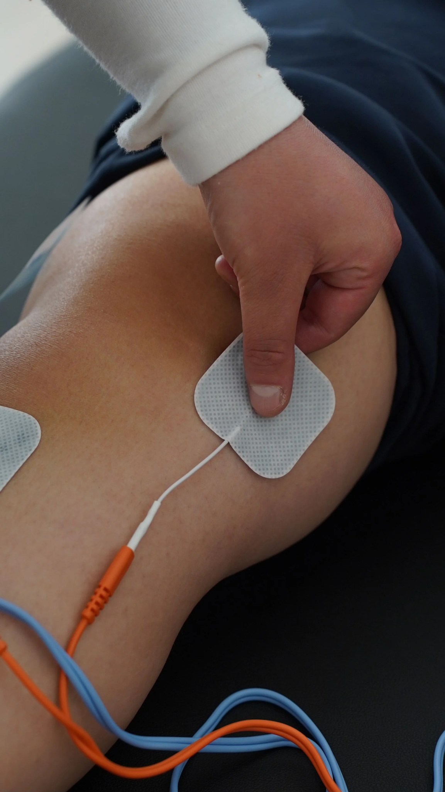
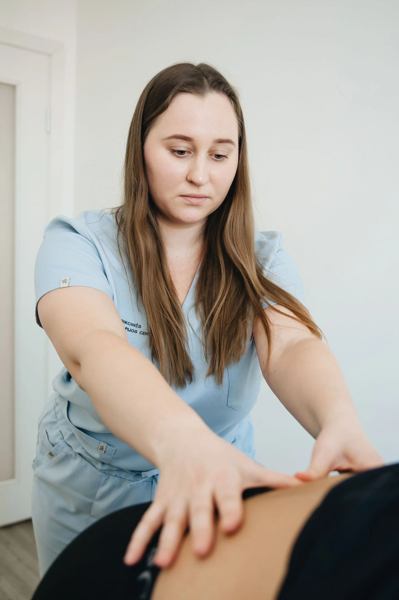

Imagem ilustrativa · não retrata o local ou a equipe
Imagem ilustrativa · não retrata o local ou a equipe01 / Fisioterapia & Quiropraxia · Cedral
Cuidar do movimento começa por entender a dor.
Dr. Brenno Vila. Tratamento da dor e reabilitação musculoesquelética, com um olhar para o movimento e para os hábitos que acompanham a sua rotina.
- Especialização em Ortopedia e Traumatologia
- Formação em Quiropraxia
- Av. Olavo Bilac, 330

Imagem ilustrativa · não retrata o local ou a equipe02 / Dor, movimento e rotina
O corpo faz parte da sua rotina.
Fisioterapia
Avaliação e cuidado voltados à dor e à reabilitação musculoesquelética.
Quiropraxia
Área de formação divulgada pelo profissional, integrada à avaliação individual.
Liberação miofascial
Técnica apresentada nos conteúdos de atendimento do perfil.
Orientação sobre hábitos
Conteúdos sobre posição para dormir, escolha do travesseiro e a relação entre tensão muscular e estresse.
 Imagem ilustrativa · não retrata o local ou a equipe
Imagem ilustrativa · não retrata o local ou a equipe03 / Trajetória & cuidado
Da formação ao cuidado de todos os dias.
Brenno Vila reúne especialização em Ortopedia e Traumatologia e formação em Quiropraxia. Além dos atendimentos, compartilha orientações sobre sono, postura e tensão muscular: temas que aproximam o cuidado do consultório dos movimentos de todos os dias.
- Foco em dor e reabilitação musculoesquelética
- Ortopedia e Traumatologia com formação em Quiropraxia
- Educação sobre travesseiro, posição para dormir e tensão muscular

Imagem ilustrativa · não retrata o local ou a equipe04 / Seu próximo passo
Vamos conversar?
Consulte os horários disponíveis pelo WhatsApp.
Fisioterapia e Quiropraxia · Cedral/SP